Kalyx alpha · Setup
Kalyx alpha — setup guide
For alpha testers. Mac + DaVinci Resolve Studio + Meta Quest 3. About 20 minutes the first time; most of it is the headset's developer mode. If anything here doesn't match what you see, that is a bug in the guide as much as in the software — tell us.
What you need
- Mac (Apple silicon or Intel, macOS 13 or newer) with DaVinci Resolve Studio 19 or 20/21. The free Resolve has no Fusion macros on the Edit page and no video I/O, so it won't work.
- Meta Quest 3 (Quest 2 and Quest Pro run it; Quest 3 is what we test on), charged, on the same Wi-Fi as the Mac or plugged into it over USB-C. USB is the better experience.
- A Meta account with developer mode (free). Steps below.
- The Kalyx alpha zip we sent you (
VR-Link-1.0.x.zip).
One thing to know before you install: Kalyx works by being a software Blackmagic card. Resolve plays out to it exactly as it would to a DeckLink or UltraStudio. That means Kalyx and Blackmagic's own Desktop Video driver can't be active at the same time in this alpha. If you have a real Blackmagic card, the installer sets its driver aside and the uninstaller puts it back; you can switch by running the uninstaller. Both drivers at once is on the roadmap.
1. Headset: developer mode (once)
- On your phone, open the Meta Horizon app → Menu → Devices → your Quest → Headset settings → Developer mode → on. If the app asks you to create or join a developer organisation, do that first (developers.meta.com → Create organisation, any name) and come back.
- Plug the Quest into the Mac with a USB-C data cable (the charging cable that came with it works).
- Put the headset on. A dialog says Allow USB debugging? — tick Always allow from this computer and allow it. If you don't see it, unplug and plug in again with the headset on your head.
2. Mac: install Kalyx (once)
- Unzip
VR-Link-1.0.x.zip into your home folder or Downloads. Keep the folder; the installer and uninstaller live in it.
- Open Terminal and run the installer from inside the folder:
cd ~/Downloads/VR-Link-1.0.x
sudo ./install.sh
Enter your Mac password when asked. (The alpha isn't signed by Apple yet; the installer clears macOS's download quarantine on what it places. If macOS still shows a "cannot be opened because the developer cannot be verified" dialog, choose Open Anyway in System Settings ▸ Privacy & Security, then run the installer again.) The installer prints what it does: driver in place, Resolve bridge and USB helper started, Fusion library (the Kalyx effects) installed, the title fonts (Montserrat) added to your user fonts, and — if the Quest is plugged in and debugging is allowed — the headset app installed too.
3. If the Quest wasn't connected, plug it in later and run sudo ./install.sh --headset from the same folder. (The package carries its own copy of Google's adb, so there is nothing else to install; if you already have Android platform-tools, yours is used.)
4. Restart Resolve if it was open. It reads the video I/O and the Fusion library at launch.
3. Resolve: point it at the headset (once per machine)
- DaVinci Resolve → Preferences → Video and Audio I/O → For capture and playback use → Kalyx (Quest). Save; restart if asked.
- Project Settings → Master Settings → Video Monitoring: set the monitoring resolution to 7680 × 4320 Ultra HD and the format to your timeline's frame rate. VR180 and anything up to 8K UHD then goes to the headset 1:1.
- Square 360 timelines only (over/under, e.g. 5760 × 5760): Resolve crops anything taller than the monitoring raster, so set Output scaling to 3840 × 3840 in Timeline Settings while you monitor (and back before you deliver). Full-size square output is on the roadmap.
4. First picture
- Put the headset on and open Kalyx View (App Library → filter Unknown sources).
- The status line at the top reads Waiting to connect → USB · Resolve on its own. No pairing, no IP addresses. Over Wi-Fi it finds the Mac in a few seconds.
- Press play in Resolve. The timeline is in the headset, in step with Resolve's viewer. Scrub, park, play — it follows.
- Look down to open the panels. Look back up past the horizon to close them. Grab a panel's top bar to put it where you like; the layout is remembered.
If the status says Premiere / After Effects instead of Resolve, the Source is set to Adobe from an earlier test: View panel → SOURCE → Auto.
5. Placing things from the headset
- Edit page → Effects → Kalyx. Drop Kalyx Canvas Control on a clip above your plate for a footage window (PIP) or a flat title; drop Kalyx 3D Card · Vine / Salmon / Hay Bale straight onto the plate for a 3D title with real depth. The Inspector has every control; the headset has the ones you want to do by hand.
- In the headset, the strip shows Overlays · Patches · Picture. On Overlays, pinch a card in the picture and move it, or tap its name and use the Placement panel's ring (pan), arc (tilt), throttles (distance, scale) and dials. Release, and Resolve re-renders: "Resolve updated in 0.4 s".
- Undo is Resolve's undo. Every change you make in the headset is a real change to the comp.
- Patches (LatLong Patcher paint-outs) and Picture (PanoMap / Kalyx Orient 360 re-orientation) live on their own layers and stay out of your way until you switch to them; lock a patch so a stray pinch can't move it.
6. Premiere Pro and After Effects (monitor only)
Install the free NDI Tools (ndi.video/tools) first, then run sudo ./install.sh --ndi from the Kalyx folder (the installer only starts the Adobe path when NDI Tools is present). In Premiere or After Effects: Preferences → Playback → Mercury Transmit → enable NDI. The headset's Source on Auto finds it. You get the picture, frame-locked; placement controls for Adobe are on the roadmap.
7. Known limits in this alpha
- Mac only. Windows is being evaluated (same driver interface; different encoder path).
- Kalyx replaces Blackmagic Desktop Video while installed (see the note at the top).
- Square 360 timelines monitor at 3840 × 3840 (set output scaling); VR180 and ≤ 8K UHD are full size.
- Hand tracking is the main input; controllers work for pointing and pressing.
- Apple Vision Pro and Pico are not targets for the alpha.
8. When something goes wrong
-
The headset tells you first. When the Mac side is set up wrong, the strip's status line shows a warning with the fix in Resolve's own menu words: Timeline 5760x5760 exceeds the 7680x4320 monitor: Timeline Settings > Output scaling > 3840 x 3840, Monitoring 1920x1080, timeline 5760x2880: Project Settings > Video Monitoring > 7680 x 4320, Monitoring at 24 fps, timeline 29.97…, or No picture: DaVinci Resolve > Preferences > Video and Audio I/O > Kalyx (Quest). The same line is in ~/Library/Logs/VRLink/bridge.out. Fix it, and the line goes away on its own.
-
No "Kalyx (Quest)" in Video I/O: Resolve was open during install. Quit and relaunch it. Still missing: ls /Library/Frameworks/DeckLinkAPI.framework should exist — if not, run the installer again and send us its output.
- Headset says Waiting to connect: check the cable and that USB debugging was allowed with the headset on; over Wi-Fi, make sure the Mac and Quest are on the same network (guest networks isolate devices). The USB helper logs to
~/Library/Logs/VRLink/usb-tether.log.
- Picture but no panels / "bridge isn't running": the Resolve bridge is a small background service;
launchctl kickstart -k gui/$(id -u)/ca.skylightproductions.vrlink.bridge restarts it. Its log is ~/Library/Logs/VRLink/bridge.out.
- Black screen in the headset or it won't open: quit the app from the Quest menu and open it again; if that fails, restart the headset and tell us the time it happened.
- Send logs: run
./send-logs.sh from the install folder. It zips the Mac logs, the versions, and (if the headset is plugged in) the headset's log onto your Desktop; attach that zip. The View tab in the headset also shows every version in play (app, Mac package, bridge, Resolve), so a screenshot of it answers the first three questions we'd ask.
9. Uninstall
cd ~/Downloads/VR-Link-1.0.x
sudo ./install.sh --uninstall
Removes the driver (and restores Blackmagic's if it was set aside), the bridge, the NDI and USB helpers. The Kalyx effects stay in your Fusion library so existing projects keep working; delete ~/Library/Application Support/Blackmagic Design/DaVinci Resolve/Fusion/Templates/Edit/Effects/Kalyx and the Kalyx *.setting files in …/Fusion/Macros if you want them gone too. On the headset: Settings → Apps → Kalyx View → Uninstall.
Kalyx alpha · Effects in Resolve
Kalyx effects in Resolve — how-to
The three things you place with Kalyx, as they appear in Resolve's Inspector and in the headset. Resolve Studio 19+, Fusion library installed by the Kalyx installer (Edit page ▸ Effects ▸ Kalyx; Fusion page ▸ Effects Library ▸ Macros).
What it is: one node that places a rectangle on the sphere — footage (a PIP), a flat graphic, or a 3D scene — at a pan, tilt, distance and size, in true stereo.
Drop it on a clip above the plate (a stacked clip on V2 or higher), not on the plate itself: its output is the window on transparency, composited by the timeline. On the Fusion page it wants:
- Left / Mono Footage ← the clip (MediaIn1). For stereo footage in two files, Right Footage ← the right clip and Mono/Stereo = Stereo. One file with both eyes: add a Splitter first (Vert for top/bottom, Horiz for side by side); Image1 → Left, Image2 → Right.
- Graphic ← a Text+ or any flat title, when Window shows = Graphic (alpha kept, no mask or frame).
- 3D Scene ← a Kalyx 3D Title or your own FBX/OBJ scene, when Window shows = Nothing (3D only).
Inspector pages:
| Page |
Controls |
Notes |
| Frame |
Window shows (Footage / Graphic / Nothing), Window Aspect (1.778 = 16:9), Window Size, Crop Sides, Crop Top & Bottom, Frame Colour, Frame Thickness, Corner Radius |
Crop shrinks the window to the content (pillarbox / letterbox bars), nothing zooms. Window Aspect means the window keeps its shape on a square 360 timeline. |
| Glow |
Glow Amount (0 = off), Glow Size, Glow Brightness |
The glow is a blurred copy of the footage behind the frame. |
| Placement |
Yaw (Pan), Pitch (Tilt), Roll, Distance (−3 = 3 m in front), Object Turn / Tilt / Spin |
Yaw/Pitch/Roll move it on the sphere; Object Turn/Tilt/Spin rotate the window in its own plane. |
| Stereo / Output |
Mono (0) / Stereo (1), Window Depth in Z, Equirect Width (per eye) |
Window Depth shifts convergence: + = toward the viewer. Output width 2880 per eye is the default; match your plate for pixel-exact composites. |
In the headset the window is on the Overlays layer: pinch it in the picture and move, or tap its name on the strip and use the Placement panel. The Look panel carries the Frame, Glow and Stereo pages.
2. 3D title with real depth — Kalyx 3D Card · Vine / Salmon / Hay Bale
What it is: Canvas Control and a 3D title in one node, pre-wired. Drop it straight on the plate clip (or an adjustment clip): it composites the card over the plate itself. Output 2, Card only, is the card on transparency if you'd rather put it on its own track.
Inspector pages:
| Page |
Controls |
| Placement |
Yaw, Pitch, Roll, Distance, Object Turn / Tilt / Spin |
| Stereo / Output |
Mono / Stereo, Window Depth, Equirect Width |
| Text |
Title (auto CAPS), Body Text, Title scale (1 = as designed) |
| 3D Model |
Show 3D Model, Model Kit Folder, Model Scale / Position X Y Z / Rotation X Y Z, Model Brightness / Contrast / Saturation |
| Animation |
Animation Start (frame), Animation Length (×), Fade out after (seconds, 0 = never), Sway amount |
| Environment |
Environment is over/under (left eye on top) |
Animation: the title fades in over the first 24 frames, the plate grows from frame 8, the body text from 24, the model from 30 (all × Animation Length). The card then stays for the length of the clip unless Fade out after is set.
Environment: the card's plate reflects the footage around it. The plate it is dropped on is the environment; tick over/under for a top/bottom stereo plate, untick for mono.
Model Kit Folder: the folder holding the kit's FBX files and textures. Today these point at Skylight's project drives; on another Mac set this to wherever the kit lives, or turn Show 3D Model off.
Building your own: on the Fusion page, Kalyx 3D Title · Vine (Macros) is the title alone, with a 3D Scene output and an Environment input; connect it to Canvas Control's 3D Scene and set Window shows = Nothing. Any 3D scene built before Canvas Control (FBXMesh3D → materials → lights → Merge3D) goes into the same input; Kalyx places it, your scene lights it.
3. Patches and re-orientation — Kalyx Orient 360
What it is: a stereo re-orientation of a top/bottom 360 plate at the end of the chain — after the LatLong Patcher paint-outs — so patches turn with the plate. Splits the eyes, PanoMaps both identically, recombines. Inputs: the T/B plate. Controls: Pan, Tilt, Roll (Placement page).
Add it on the Fusion page, between the last patch/paint and MediaOut. (Dropped from the Edit page onto a clip that already has a comp, Resolve adds it unwired — wire it on the Fusion page.) A mono plate takes a plain PanoMap instead and shows up on the same headset layer.
In the headset: the Picture layer shows Orient 360 / PanoMap with pan, tilt and roll; turn on the Level grid (View tab) and bring the horizon to the copper line. The Patches layer lists each LatLong Patcher window; lock the ones you don't want a stray pinch to move.
4. A trim pass from the headset — Kalyx Trim
What it is: one Fusion ColorCorrector in a macro, meant for an adjustment clip on top of the stack so it sees every grade below it. Not a grading tool (the Quest panel is not a reference display); a trim you make on the device the audience will wear, that Resolve's colour page never sees and that you can throw away.
- Put an adjustment clip over the section (Effects ▸ Toolbox ▸ Effects ▸ Adjustment Clip) and drop Kalyx Trim on it from Effects ▸ Kalyx.
- Controls, all on one Trim page: Exposure (an offset, −0.5…+0.5), Lift, Gamma, Gain, Contrast, Saturation, Temperature (blue ↔ amber) and Tint (green ↔ magenta), both approximated with per-channel gain, and Amount (0 turns the trim off, for before/after). Every one of them keyframes and undoes like any other Resolve control.
- In the headset: the Picture layer lists the trim as Trim; its controls are bars on the Look panel's Trim tab. The Placement panel has nothing to place for it and says so.
- When the trim is right, either leave it (it renders in the export like any Fusion effect) or read the values off the Inspector and build them into the grade on the colour page.
Why a Fusion node and not the colour page's own CDL: Resolve's scripting can set a node's CDL but not read it back, so the headset would be blind to the colourist's wheels and would overwrite them. The Fusion route is readable, writable, keyframeable, undoable, and it stacks on top of the real grade instead of replacing it.
Quick answers
- The window is black / the card is a dark slab: the macro in your comp is an old copy; delete it and drop the current one from Effects ▸ Kalyx (Resolve bakes a copy of the macro into each clip).
- White bars above and below the footage: Window Aspect is 1.778 but the footage isn't 16:9 — set Window Aspect to the footage's ratio, or use Crop.
- The card ignores the headset: the strip is on the wrong layer, or the group is locked (lock icon on its name).
- Nothing in Effects ▸ Kalyx: Resolve reads the library at launch — restart it after installing.
Kalyx alpha · Headset reference
Kalyx View — headset reference
Every panel as the headset draws it (these pictures come from the app's own renderer, so they are the current UI, pixel for pixel). Hand tracking: pinch to press, pinch-and-hold to drag. Controllers: trigger to press. Look down to open the panels, look back up past the horizon to close them; grab a panel's top bar to move it, and it stays where you put it.
The strip
Always on screen when the panels are open. Its job is to answer two questions at a glance: which layer am I on, and which thing will my hand move?
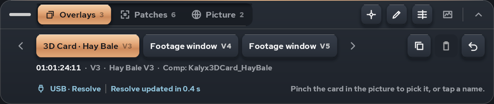
- Overlays · Patches · Picture — the layer control, with a count of what is at this frame. Overlays are titles and footage windows (pickable in the picture). Patches are LatLong Patcher windows. Picture is the whole sphere (PanoMap, Kalyx Orient 360) and the Kalyx Trim pass (its controls are on the Look panel's Trim tab).
- The four icons on the right show and hide the Placement, Look, Timeline and Scopes panels (raised = shown). The chevron rolls the strip up to its bar.
- Row two: one chip per thing on this layer; the copper one is what your hand moves. Only ever one. Arrows page through them; a lock on a name means it is locked.
- Copy · Paste · Undo act on the picked chip. Undo is Resolve's undo.
- Below: timecode · track · clip · what the overlay is built from, then the ice status line: link (USB / Wi-Fi), software, and the last round trip ("Resolve updated in 0.4 s" or "Rendering… 1.2 s").
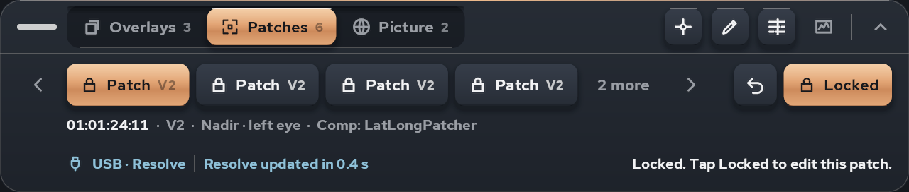
On Patches nothing in the picture is pickable; tap a name instead. Locked on the right is the switch for the picked patch; locked patches show a lock on their name and the panels refuse changes until you unlock.
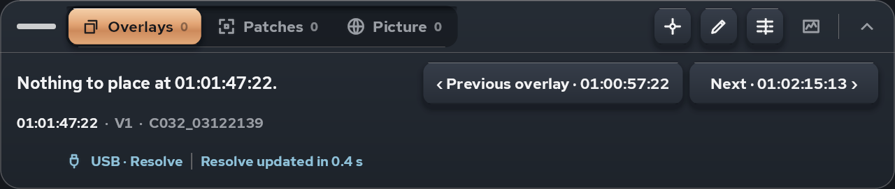
An empty layer says why and offers the nearest overlay on either side, with its timecode: one pinch to jump there.
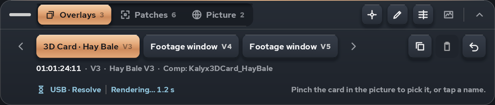
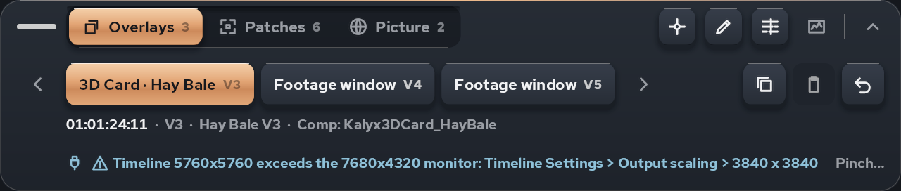
When Resolve's monitoring, output scaling or frame rate is wrong, or no picture arrives, the status line says so with the fix in Resolve's own menu words. Fix it and the line clears on its own.
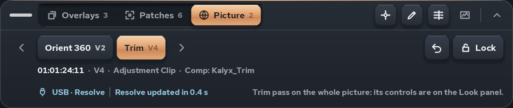
Placement
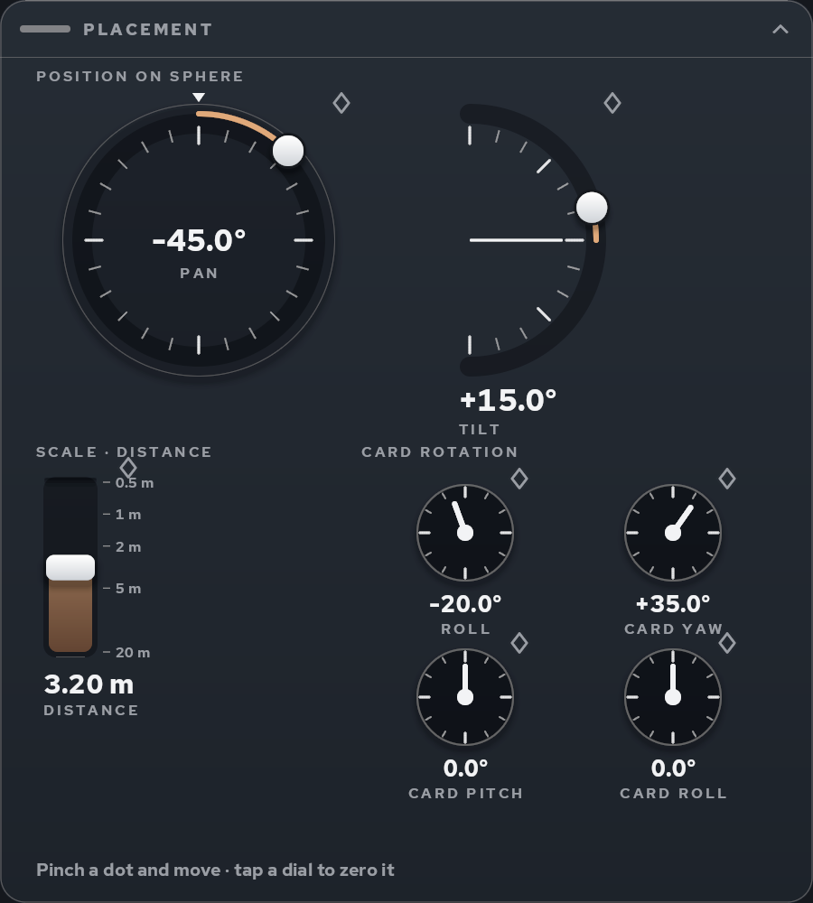
- Ring (Pan): you are the centre, front is up (the white notch). Drag the dot around; the copper arc shows how far from front you are. Ticks every 15°.
- Arc (Tilt): side view, up is up; the white line is the horizon.
- Throttles (Distance, Scale): vertical, up = nearer / bigger, log scale with the real units printed beside the travel.
- Dials (Roll, Card yaw / pitch / roll): drag up or down to turn; tap the centre to zero. The value sits under the dial.
- The diamond beside a control is its keyframe: outline = not animated, white = animated, copper = a key on this frame.
- Or skip the panel: pinch a card in the picture and drag it; Pan and Tilt follow your hand.
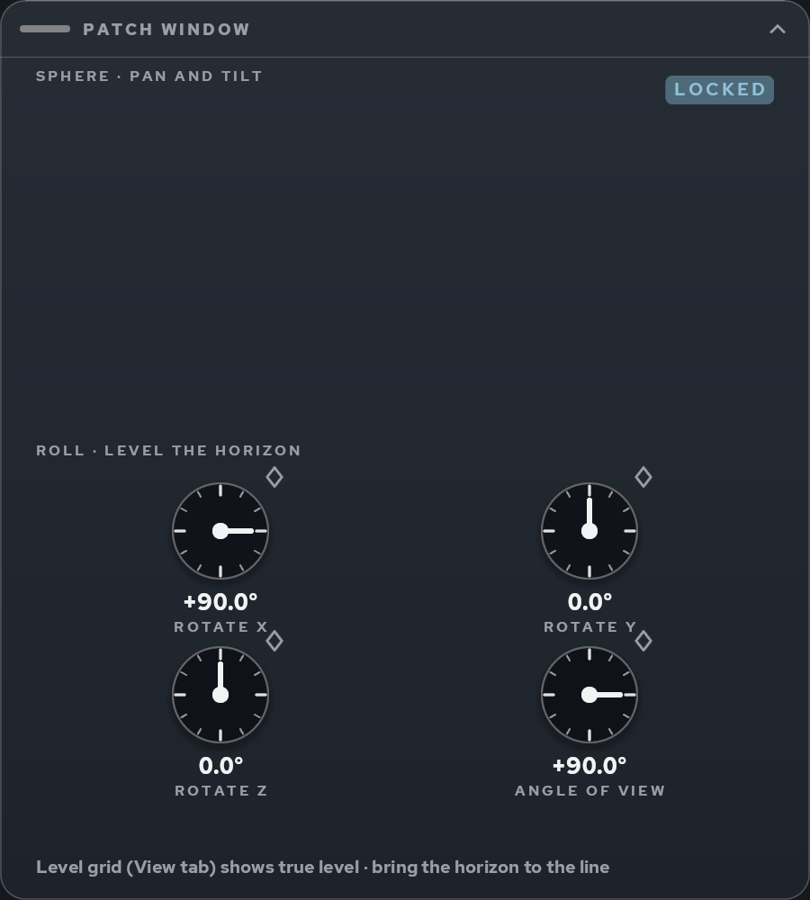
For a patch or the whole picture the same panel shows the tool's rotations; a locked patch shows LOCKED and ignores drags.
Look
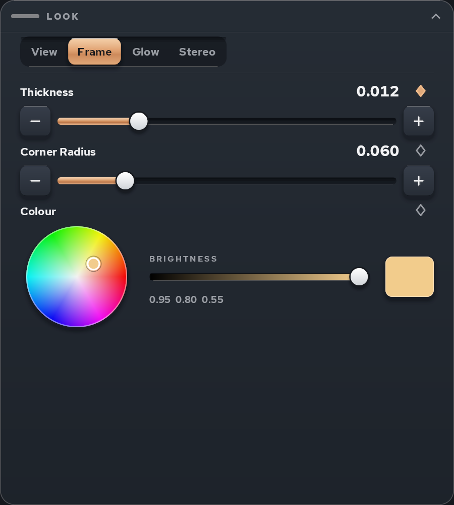
Tabs are the macro's own pages (Frame, Glow, Stereo…). Bars have nudge chips for exact steps; a 0/1 control is a switch; colours get a wheel with a brightness bar and a swatch.
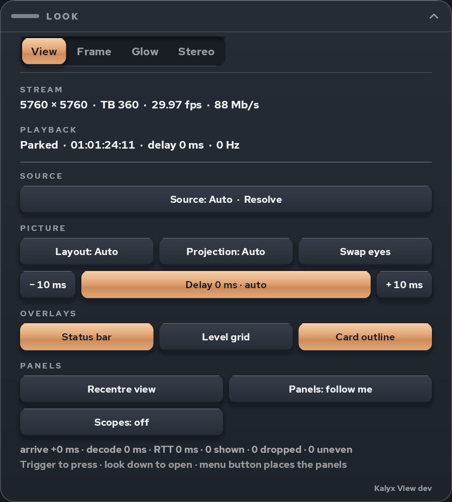
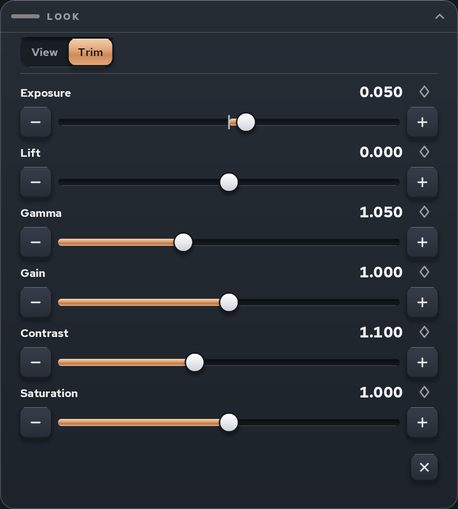
A Kalyx Trim on an adjustment clip gets a Trim tab: exposure, lift, gamma, gain, contrast, saturation, temperature, tint and amount, as bars.
The View tab is the app's own settings: stream and playback status; Source (Auto / Resolve / Premiere · After Effects); Picture (layout, projection, swap eyes, delay); Overlays (status bar, level grid, card outline); Panels (recentre, placed / follow, scopes on/off). Diagnostics at the bottom, and the versions line: headset build · Mac package · bridge (when it differs) · Resolve. Read that line out, or screenshot it, when you report anything.
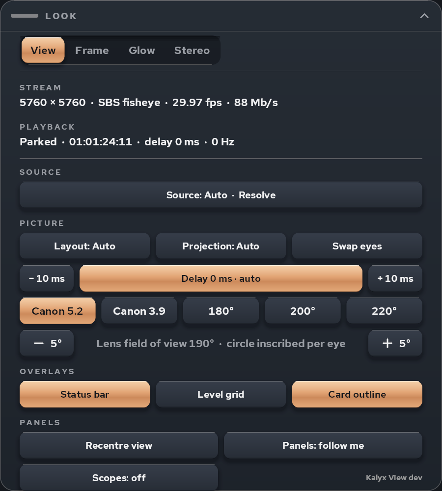
With the fisheye projection the lens presets appear: Canon RF 5.2 mm (190°), Canon RF-S 3.9 mm (144°), 180°, 200°, 220°, and a ±5° trim.
Timeline
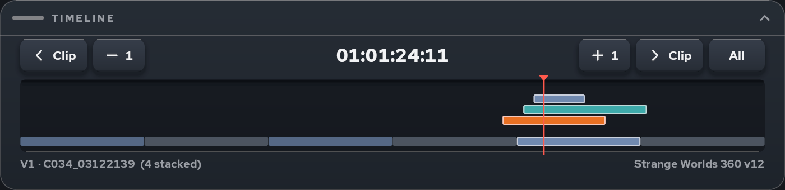
Clip lanes per track, the playhead in red, markers above. Scrub by dragging in the lanes; ‹ Clip / Clip › jump to clip edges; −1 / +1 step a frame; the chip on the right zooms to All / 60 s / 10 s.
Scopes
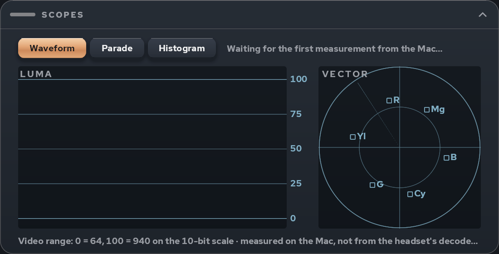
Measured on the Mac from the uncompressed frame Resolve (or the NDI sender) plays out, before it is encoded for the headset, so they read the monitoring signal itself. Waveform + vectorscope, RGB parade, or histograms. Lines at 0 / 25 / 50 / 75 / 100 are video range (64…940 on the 10-bit scale); the vectorscope carries the 75 % colour-bar targets and the skin-tone line.
Level grid
Turn it on from the View tab (Overlays ▸ Level grid): a world-level copper horizon with yaw ticks and pitch lines over the footage. Use it with the Picture layer to re-level a shot: bring the real horizon to the line.
Driving the app without hands (for bug reports and tests)
The app reads a text file once every half second and acts on it, so a scripted session can press, point and quit exactly where a tester did. From a Mac with the headset on USB:
adb shell "echo 'press Copy' > /sdcard/Android/data/ca.skylightproductions.vrlink/files/cmd.txt"
Commands, one per line: press <Button> [arg] (button names as in the source: Copy, Paste, Undo, Tab, Layer, Lock, Jump, FovPreset…), point <panel> <u> <v> [press] (aim a fake hand from your head at panel texels u, v: 0 = strip, 1 = placement, 2 = look, 3 = timeline, 4 = scopes; point off clears it), slider <row> <0..1>, throttle <row> <0..1>, ring <row> <degrees>, scrub <0..1>, tab <n>, open / close (the panels), roll <panel>, status (one line to the log), quit (the Quest-menu quit path). The headset has to be on a head: the Quest shows a Guardian dialog on a desk and blocks launches behind it.
Kalyx alpha · Macro regression
Kalyx macro render regression
Every Kalyx macro rendered through DaVinci Resolve's export path (the one that fails with "The Fusion composition at … could not be processed successfully" when something is wrong), on a Mac that is not the one the macros were built on. First run: 31 Oct 2026 on NYC (macOS 26.3.1, Resolve 21.1.0.17, clean Kalyx 1.0.7 install, project "KALYX TEST").
How it runs
macros/gen_regression.py builds one Fusion comp per variant from the .setting files: MediaIn1 → macro(s) → MediaOut1 with the variant's published inputs set on the inner tools. A comp must reference a macro's output by its inner tool (Stack_Eyes_OverUnder.Output); MacroName.MainOutput1 imports but renders nothing.- On the test Mac,
rq/s_regress.py (driven by rq.py, Resolve's scripting API) keeps a scratch timeline Kalyx regression (5760 × 2880, project frame rate), one 60-frame clip per variant (a real BRAW clip from the project — generator clips cannot take an imported comp), imports the comp with TimelineItem.ImportFusionComp, renders frames 40–41 to out/<variant>/ as a render job, and records the job status, the files produced and every ERROR line Resolve logged during that job in result.json.
- Pass = job Complete with a file on disk. Fail = job Failed, or no file, or a 4-minute timeout.
Variants
| id |
what |
| cc_ws0 / ws1 / ws2 |
Kalyx Canvas Control, Window shows = Footage / Graphic / Nothing, footage and graphic fed from the clip |
| title_Vine / Salmon / HayBale |
Kalyx 3D Title → Canvas Control's 3D Scene input, Window shows = Nothing (the only way a title becomes pixels) |
| card_X_ws0 / ws1 / ws2 |
Kalyx 3D Card (Vine, Salmon, Hay Bale), Window shows 0 / 1 / 2 |
| card_X_hold1 |
fade out after 1 s (frame 40 is mid-fade) |
| card_X_env0 |
Environment not over/under |
| card_X_out2 |
output 2 (card only, transparent) |
| card_Vine_missingkit |
kit folder pointed at a path that does not exist |
| orient360 |
Kalyx Orient 360, pan 30 |
| p_direct / p_inner / p_inner_ws0 |
harness probes: pass-through, and Canvas Control via the inner output |
Results
Pass 1 — 31 Oct 2026 09:14–09:21, NYC as installed (Kalyx 1.0.7, no Montserrat, no Salmon kit)
| variant |
result |
seconds |
why |
| cc_ws0, cc_ws1, cc_ws2 |
PASS |
5–7 |
— |
| orient360 |
PASS |
4.5 |
— |
| title_Vine / Salmon / HayBale |
FAIL |
6–16 |
Could not find font: Montserrat → Exception caught while executing Fusion algorithms: Fonts Not Found → the whole scene chain "cannot get Parameter" → job fails |
| card_Vine_* (6) |
FAIL |
14–28 |
same: fonts |
| card_Salmon_* (6) |
FAIL |
4–8 |
fonts, and Could not locate pool item "/Volumes/Earth-1610/…/Salmon_Kit/…" (the kit's textures) — plus the Alembic mesh was an absolute path, so even a ModelKit override could not have found the fish |
| card_HayBale_* (6) |
FAIL |
16–41 |
fonts, and Could not locate pool item "/Volumes/The Baxter Building/2609…/HayBale_Kit/…" (to be read again in pass 2; the folder does exist on NYC's mount) |
| card_Vine_missingkit |
FAIL |
19.5 |
FBX Error: "FBX SDK error: "Unexpected file type" while importing file — a missing kit fails the export, it does not degrade to "no model" |
| p_direct, p_inner, p_inner_ws0 |
PASS |
4–7 |
harness probes |
What this says. The parts of the library that carry no outside dependency (Canvas Control, Orient 360) export cleanly on a Mac that is not Bruce. Everything with a 3D Title in it fails there, and fails the way Nelson's Salmon export failed: "The Fusion composition at … could not be processed successfully". Two causes, both ours, both now fixed in the source:
- Fonts. The titles are set in Montserrat Medium and ExtraBold Italic. A Mac without them does not fall back to another face — Resolve's Text3D throws Fonts Not Found and the frame is refused. Fix:
fonts/Montserrat-{Medium,ExtraBoldItalic}.ttf (SIL OFL, licence beside them) ship in the package and install.sh copies them to ~/Library/Fonts (Resolve reads fonts at launch). On NYC they are installed by hand for pass 2.
- Model kit paths. The Salmon title's Alembic mesh (
Salmon_Swim.abc) was a bare absolute path on Earth-1610, unlike every other model file, which follows CARD_CONTROLS.ModelKit. make_3dtitle.py now rewrites every ImportFile / Filename under the kit's default folder into a kit-relative expression, and the three titles and three cards were regenerated and redeployed (Bruce and NYC libraries, dated backups in Fusion-archive/2026-10-31).
Still open from this pass: the kits themselves (Vine 22 MB, Salmon 131 MB, Hay Bale 167 MB) live on project volumes. A tester gets a 3D Card only if the kit travels with the package or they point Model Kit Folder at a copy; a missing kit fails the export outright. That is the licence/bundling decision already on Nelson's list, now with sizes.
Pass 2 — fonts installed, Salmon kit copied to NYC, fixed macros — not yet run to completion
Blocked by the test rig, not the library: after Resolve is quit and relaunched over ssh on the headless NYC, its UI ends up behind a modal (the scripting API answers queries but GetCurrentPage() is None and AppendToTimeline / ImportFusionComp / AddRenderJob return nothing). One relaunch out of four came up clean (page Edit, edits worked) and then a 26-clip DeleteClips raised a confirmation dialog that cannot be dismissed without a screen. Harness changes made for the re-run: no bulk deletes (clips are reused, comps replaced per item), LoadFusionCompByName after import, job status tolerant of None.
To finish pass 2 (five minutes once Resolve is sane): on NYC via screen sharing, dismiss whatever Resolve is showing, open KALYX TEST, then from Bruce: ssh -4 nyc.local 'cd ~/kalyx-test/rq && rm -rf out result.json && nohup python3 rq.py s_regress.py > regress.out 2>&1 &'; results land in result.json. Expected: every title/card variant passes except card_Vine_missingkit (by design) — and card_HayBale_* tells us whether the Hay Bale "pool item" line was a real missing file.